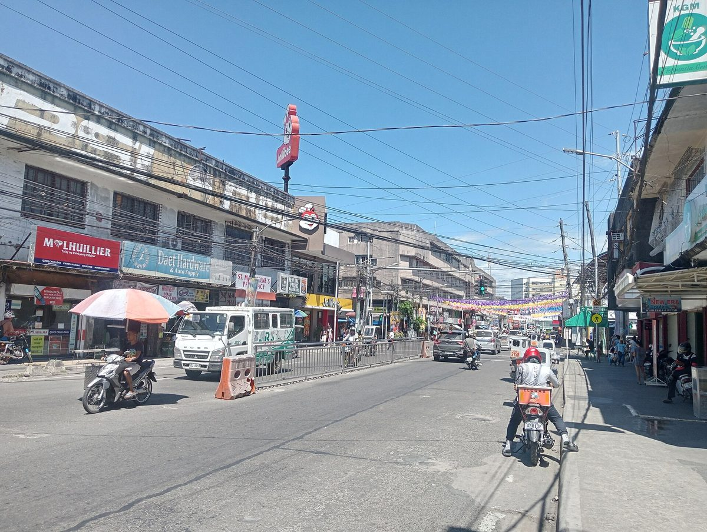

필리핀 카마리네스노르테 전기협동조합 이사회, 아보이티즈파워 합작 의향서 거부…조합원·노조 "공공서비스를 장사로 만들지 말라"

9월 2일 받은 합작계약 의향서를 결의 제171호로 공식 거부…"제휴 구조·조합원 영향 불분명" — 민영화 반대 운동 "합작 추진이 완전히 멈출 때까지 끝난 것 아냐"
필리핀 비콜 지방 카마리네스노르테주의 회원 소유 전기협동조합(CANORECO) 이사회가 대형 에너지 기업 아보이티즈파워(AboitizPower)의 합작계약(JVA) 의향서를 결의 제171호(2026년)로 공식 거부했다. 이사회는 의향서가 제휴의 성격과 구조, 조합과 '회원·소비자·소유자'인 조합원에게 미칠 영향, 법·규제 준수 여부를 분명히 밝히지 않았다는 점을 거부 이유로 들었다. 조합은 9월 2일 이 의향서를 받았으며, 이사회가 회사 쪽 제안 설명을 듣기로 표결했다는 말이 온라인에 퍼지면서 민영화 논란이 커졌다. 소비자·노동자·청년 단체가 꾸린 'CANORECO 팔지 마라 운동'은 10월 13일 주도 다엣의 조합 건물 앞에서 "사람을 위한 서비스, 장사로 만들지 말라"는 구호를 외치며 같은 날 이사회에 오른 합작 안건을 거둬들이라고 요구했고, 조합원 협의 없이 일이 진행돼 투명성과 책임성이 없었다고 주장했다. 조합 일반직 노조 위원장 말루 메야(Malou Mella)는 민영화가 공공서비스보다 이윤을 앞세우고 서비스 개선도 보장하지 않으며, 합작 뒤에는 직원 전원이 사직한 뒤 다시 채용되는 식으로 고용이 흔들린다고 주장했다. 운동 공동대표 올리버 파르도(Oliver Pardo)는 합작 추진이 더는 이어지지 않는다는 것이 분명해질 때까지 끝난 것이 아니라는 입장이며, 거부 결의 날짜와 아보이티즈파워 쪽 입장은 공개되지 않았다.
시민에너지 관점
이사회가 내건 거부 이유 세 가지 — 제휴 구조, 조합원에게 미칠 영향, 법 준수 — 는 결국 이 전력 조직의 주인이 누구냐는 물음이다. 9월 2일 의향서가 온 뒤 10월 13일 시위가 열릴 때까지 조합원은 협의 대상이 아니었다는 것이 반대 운동 쪽의 주장이다. 대기업 합작이 투자와 효율을 가져온다는 기대도 있지만, 지분과 결정권이 넘어가면 요금과 고용, 서비스를 정하는 권한도 함께 넘어간다. 시민이 소유한 에너지 조직은 매각·합작 같은 소유 구조 변경을 조합원 총회 의결로만 할 수 있도록 정관에 못 박아야 하고, 국내에서 늘고 있는 주민 출자 발전 조합들도 지금부터 그 장치를 갖춰야 한다.
출처: AlterMidya 2026-10-29 Baretang Bikolnon 원문 보기
フィリピン北カマリネス電力協同組合の理事会、アボイティス・パワーの合弁意向書を拒否…組合員・労組「公共サービスを商売にするな」
9月2日に受け取った合弁契約の意向書を決議第171号で正式に拒否…「提携の構造・組合員への影響が不明確」— 民営化反対運動「合弁の動きが完全に止まるまで終わりではない」
フィリピン・ビコール地方北カマリネス州の会員所有の電力協同組合（CANORECO）の理事会が、大手エネルギー企業アボイティス・パワー（AboitizPower）の合弁契約（JVA）の意向書を決議第171号（2026年）で正式に拒否した。理事会は、意向書が提携の性格と構造、組合と「会員・消費者・所有者」である組合員への影響、法令・規制の順守について明確にしていないことを拒否の理由に挙げた。組合は9月2日にこの意向書を受け取り、理事会が会社側の提案説明を聞くことを議決したという話がネット上で広がったことで、民営化をめぐる議論が大きくなった。消費者・労働者・若者の団体でつくる「CANORECOを売るな運動」は10月13日、州都ダエトの組合の建物前で「人々のためのサービスを商売にするな」と声を上げ、同じ日の理事会に出された合弁の議題を取り下げるよう求めるとともに、組合員との協議なしに事が進められ、透明性と説明責任が欠けていたと主張した。組合の一般職労組のマロウ・メヤ（Malou Mella）委員長は、民営化は公共サービスより利益を優先し、サービスの改善も保証せず、合弁後は職員全員がいったん退職してから再雇用されるなど雇用が不安定になると主張した。運動の共同代表オリバー・パルド（Oliver Pardo）氏は、合弁の動きがこれ以上続かないとはっきりするまで終わりではないとの立場で、拒否決議の日付とアボイティス・パワー側の見解は公表されていない。
市民エネルギーの視点
理事会が挙げた三つの拒否理由 — 提携の構造、組合員への影響、法令の順守 — は、結局この電力組織の持ち主は誰かという問いである。9月2日に意向書が届いてから10月13日に抗議行動が起きるまで、組合員は協議の相手にされなかったというのが反対運動側の主張だ。大企業との合弁が投資と効率をもたらすという期待もあるが、持ち分と決定権が移れば、料金や雇用、サービスを決める権限も一緒に移ってしまう。市民が所有するエネルギー組織は、売却や合弁といった所有構造の変更を組合員総会の議決によってのみ行えるよう定款に明記すべきであり、韓国で増えつつある住民出資の発電組合も今からその仕組みを備えるべきだ。
出典: AlterMidya 2026-10-29 Baretang Bikolnon 原文を読む
菲律宾北甘马粦电力合作社理事会拒绝阿博伊蒂斯电力合资意向书…社员与工会："不要把公共服务变成生意"
9月2日收到的合资协议意向书经第171号决议正式拒绝…"合作结构及对社员影响不明确"——反私有化运动："合资计划彻底停止之前，事情还没结束"
菲律宾比科尔地区北甘马粦省由会员所有的电力合作社（CANORECO）理事会，以2026年第171号决议正式拒绝了大型能源企业阿博伊蒂斯电力（AboitizPower）提交的合资协议（JVA）意向书。理事会给出的理由是，意向书没有说明合作的性质与结构、对合作社及身为"会员、消费者兼所有者"的社员的影响，以及是否符合法律和监管要求。合作社于9月2日收到这份意向书，此后网上流传理事会已表决同意听取公司方面的提案说明，私有化争议随之扩大。由消费者、劳动者和青年团体组成的"CANORECO不卖运动"于10月13日在省会达特的合作社大楼前高喊"为人民服务，不要变成生意"，要求撤回当天提交理事会的合资议程，并指称此事未与社员协商便推进，缺乏透明度和问责。合作社普通职员工会主席马卢·梅亚（Malou Mella）称，私有化把利润置于公共服务之上，也不能保证改善服务，合资后员工往往要全体辞职再重新受雇，就业变得不稳定。运动联合召集人奥利弗·帕尔多（Oliver Pardo）表示，在确定合资计划不再继续之前，事情并没有结束；拒绝决议的日期和阿博伊蒂斯电力方面的立场尚未公开。
市民能源视角
理事会列出的三条拒绝理由——合作结构、对社员的影响、合法合规——归根结底是在问：这个电力组织的主人是谁。反对运动方面认为，从9月2日收到意向书到10月13日抗议，社员始终没有被当作协商对象。有人期待与大企业合资能带来投资和效率，但股权和决策权一旦转移，决定电价、就业和服务的权力也会一并转移。市民所有的能源组织应当在章程中写明，出售、合资等所有权结构变更只能经社员大会表决，韩国日益增多的居民出资发电合作社也应从现在起备好这样的机制。
来源: AlterMidya 2026-10-29 Baretang Bikolnon 查看原文
Board of Philippine electric cooperative CANORECO rejects AboitizPower joint-venture letter of intent as members and union say "don't turn public service into business"
Letter of intent received on Sept. 2 formally rejected under Resolution No. 171, citing unclear partnership structure and impact on member-owners; anti-privatisation movement says "it ain't over until it's over"
The board of the member-owned Camarines Norte Electric Cooperative (CANORECO) in the Bicol region of the Philippines has formally rejected a letter of intent for a joint venture agreement (JVA) from energy giant AboitizPower, under Resolution No. 171, Series of 2026. The board said the letter did not make clear the nature and structure of the proposed partnership, its potential impact on the cooperative and its member-consumer-owners, or its compliance with legal and regulatory requirements. The cooperative received the letter on Sept. 2, and the privatisation dispute grew after claims spread online that the board had voted to hear a presentation of the company's proposal. On Oct. 13 the CANORECO Not For Sale Movement, made up of consumer, labour and youth groups, rallied in front of the cooperative's building in the provincial capital of Daet under the chant "Serve the people, don't turn it into business," demanding that the JVA item be pulled from that day's board meeting and arguing that the matter had moved ahead without consulting members, showing a lack of transparency and accountability. Malou Mella, president of the cooperative's rank-and-file union, argued that privatisation puts profit ahead of public service, does not guarantee better service, and leaves jobs insecure, with staff often required to resign en masse before being rehired. Movement co-convenor Oliver Pardo said the fight is not over until it is clear the joint venture will not go forward; the date of the rejection resolution and AboitizPower's position have not been made public.
Citizen Energy View
The board's three reasons for rejection, the partnership's structure, its impact on members and its legal compliance, all come down to one question: who owns this power organisation. According to the opposition movement, members were never treated as parties to consult between the letter's arrival on Sept. 2 and the protest on Oct. 13. Some expect a joint venture with a large company to bring investment and efficiency, but once equity and decision-making pass to others, so does the power to set tariffs, jobs and service. Citizen-owned energy organisations should write into their bylaws that any change of ownership, such as a sale or joint venture, can only be made by a vote of the general assembly of members, and the resident-funded power cooperatives now multiplying in Korea should build in that safeguard from the start.
Source: AlterMidya 2026-10-29 Baretang Bikolnon Read the original